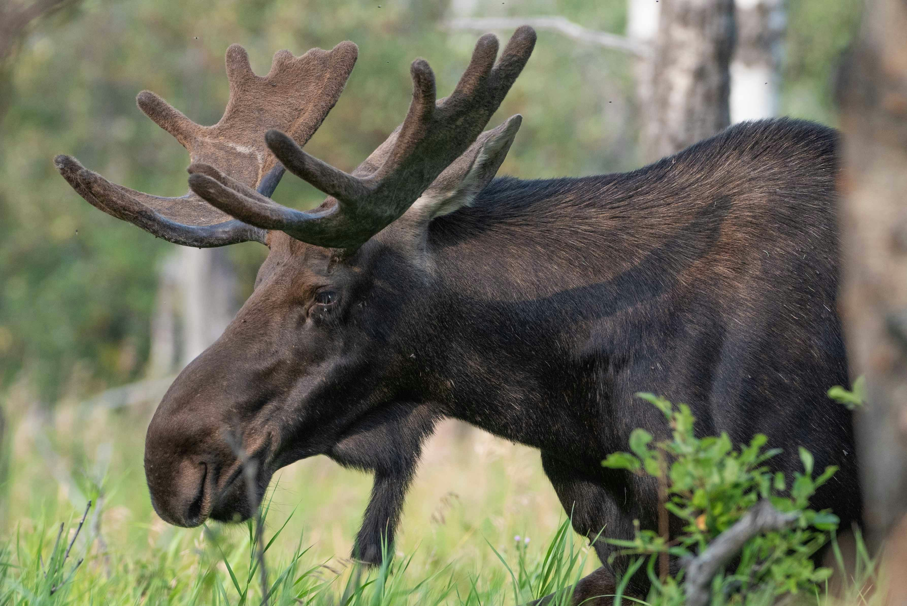
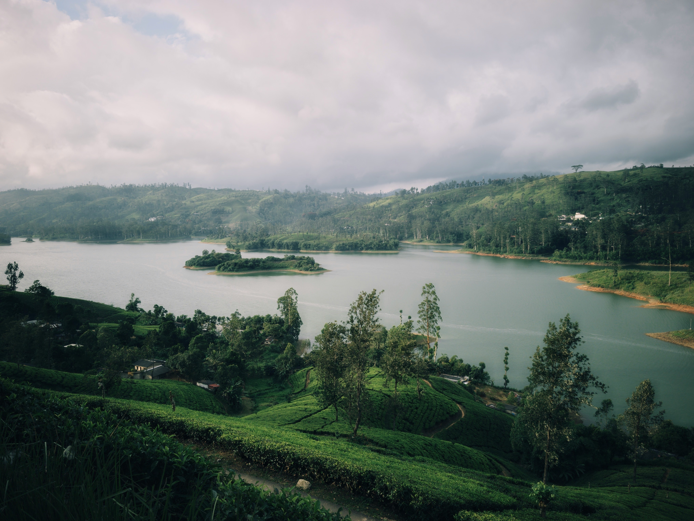
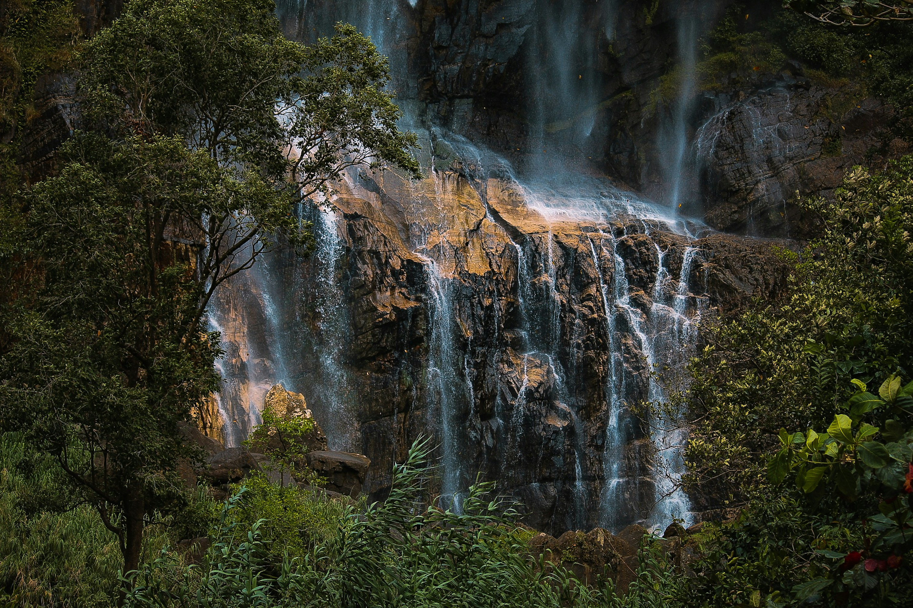
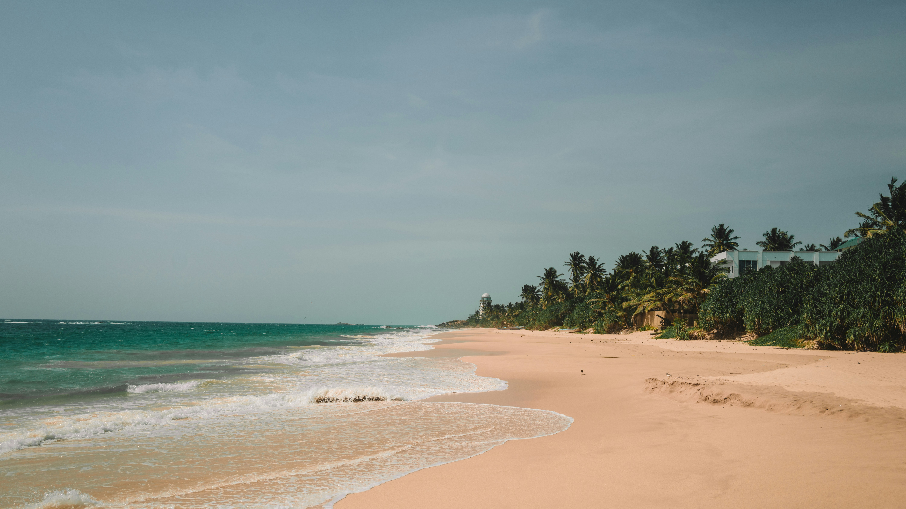
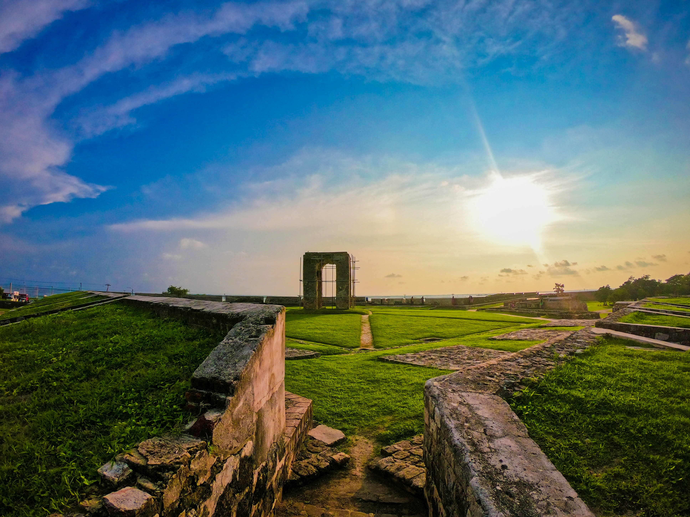

Nature & AdventureHorton Plains: The High-Altitude Wilderness of the Central Highlands
A misty national park perched at 2,100 metres above sea level, home to World's End cliff, Baker's Falls, and rare cloud forest wildlife.

Cultural HeritageHatton & Talawakele: The Heart of Sri Lanka's Tea Country
Explore the misty hills of Hatton and Talawakele where emerald tea estates cascade across the landscape and colonial-era tea factories still operate.

Nature & AdventureWaterfalls of Sri Lanka: Chasing the Misty Veils of the Highlands
From Diyaluma to Bambarakanda — Sri Lanka is home to over 100 spectacular waterfalls hidden deep in the lush highland forests.

Beach & CoastUnawatuna Beach: The Golden Horseshoe of the South Coast
One of Sri Lanka's most iconic beaches — a sheltered golden horseshoe bay with calm turquoise waters, colourful coral reefs, and vibrant beach cafés.
 Beach & Coast
Beach & Coast
Ahangama: The Hipster Surf Capital of Ancient Art
A laid-back coastal village blending world-class surf breaks with traditional stilt fishermen — one of Sri Lanka's most photogenic destinations.

Cultural HeritageJaffna: Discovering the Soul of Sri Lanka's Northern Peninsula
Ancient Hindu temples, colonial forts, vibrant Tamil culture, and pristine island escapes — Jaffna is Sri Lanka's most fascinating cultural treasure.
 Safari & Wildlife
Safari & Wildlife
Minneriya National Park: Witnessing the Greatest Elephant Gathering in Asia
Every dry season, hundreds of wild elephants congregate at Minneriya tank — one of the most breathtaking wildlife spectacles on the planet.
 Cultural Heritage
Cultural Heritage
Dambulla Cave Temple: The Golden Masterpiece of Ancient Art
Carved into a giant granite outcrop, the Dambulla Cave Temple is Sri Lanka's largest and best-preserved cave temple complex with over 150 Buddha statues.
 Nature & Adventure
Nature & Adventure
Ella: Sri Lanka's Most Beloved Hill Town & Hiking Paradise
Ella Rock, Little Adam's Peak, the Nine Arch Bridge, and endless tea estates — this small hill town punches far above its weight as a travel destination.